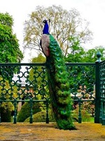

Su nombre científico es Aptenodytes patagonicus. Como todos los pingüinos tienen el vientre blanco, se distingue porque tiene una coloración naranjada en la parte superior de éste bordeada por una franja negra. La espalda es de color gris oscuro hasta la cola. Las patas y la cabeza son de color negro, su pico es puntiagudo con una longitud entre 11 y 14 cm, es levemente encorvado y también tiene el color naranja en su parte basal. Además tienen marcas de ese color detrás de los ojos.
Pueden alcanzar hasta un metro de longitud, y el peso varía entre 9 y 15 Kg dependiendo mucho de la época del año. El pingüino rey es más pequeño que el pingüino emperador, que es la especie más grande de esa familia.
Pueden permanecer más 10 minutos bajo el agua y zambullirse a profundidades que alcanzan los 300 metros. Son bastante eficientes a la hora de nadar, con velocidades promedio de 12 Km/h pero se tienen registros de algunas a 30 Km/h en distancias cortas, lo que los hace más rápidos que los peces. Su alimentación básica es kril, calamares y peces pequeños.
Prefiere climas más templados en el continente Antártico, anidando en sus islas cercanas en época de primavera austral en noviembre. Pueden durar hasta dos años viviendo prácticamente en el agua. Con sus compañeros emprenden la marcha para llegar al mismo sitio donde nacieron, recorren grandes distancias y el viaje puede tardar varios días. Cuando arriban forman allí inmensas colonias sobre suelo despejado.
Para cortejar a sus potenciales parejas, emiten potentes sonidos para atraerse. Las hembras ponen un huevo que cuidadosamente se turna con el padre para incubarlo, mientras alguno está de pesca. Lo cargan sobre las patas para evitar el frío intenso del suelo y lo acomodan en un pliegue que forma una bolsa protectora en el vientre.
El polluelo es de color castaño, el primer mes y medio permanece bajo el pliegue de piel de sus padres porque todavía no podría resistir por sí solo las temperaturas extremas. Cuando la capa de plumas se hace más espesa quedan cubiertos por un caluroso abrigo que les permite salir con mayor frecuencia de la bolsa de sus padres. A los 5 meses pierde el plumón castaño y a los 7 meses llega al océano después de un largo recorrido. Alcanzan la adultez a los tres años, y es cuando vuelven a tierra firme para reproducirse.
Cuando los padres se alejan en invierno para buscar alimento, los polluelos se agrupan en guarderías formando una aglomeración muy compacta para conservar el calor, y van rotándose de los extremos exteriores hacia el interior para evitar perecer congelados. En esta época también pierden mucho peso porque los padres tardan en proveerles el alimento.
Su nombre científico es Pavo cristatus, también es conocido como pavo real de la India. Pertenece al orden de los galliformes y a la familia Phasianidae del reino animal. Es de origen asiático pero ha sido introducido con éxito en el resto del mundo.
Como en todo el género de los pavos, se presenta un fuerte dimorfismo sexual que permite diferenciar a machos y hembras muy fácilmente. Las hembras son más pequeñas con longitudes de 1 m y pesos de 3 Kg. El color del plumaje es gris cenizo con algunos reflejos verdes en el pecho, y el cuello. El penacho sobre su cabeza también es más pequeño y marrón.
Los machos son notablemente más grandes alcanzando longitudes de 2,2 m y pesos promedio de 5Kg. Lucen un penacho en colores brillantes como su plumaje. La característica más particular y llamativa de los pavos reales machos es su espectacular cola multicolor, el más predominante es el azul con tonos iridiscentes y reflejos verdes. Lo usan para defender el territorio de su influencia y en el cortejo de apareamiento. En ambos casos hacen un despliegue de majestuosidad abriendo por completo las coberteras que normalmente miden dos metros y dejando ver múltiples ocelos en colores dorado, azul y verde. Esta capacidad se les hace posible a partir de los tres años de edad, y cada año hay una muda de las coberteras por lo que en otoño es normal que los machos estén desprovistos de su mejor atractivo.
El comportamiento social es igual que en el resto de especies de pavos, viven en pequeños grupos liderados por un macho y unas cuatro o cinco hembras. Es una especie de costumbres diurnas, al caer la noche suelen buscar las ramas de los árboles para descansar ya que a pesar de su frondoso plumaje pueden ejecutar vuelos cortos. El macho corteja las hembras realizando la mejor muestra del abanico multicolor, además emite chillidos y graznidos con trompeteos graves. La hembra realiza una puesta de uno a tres huevos que incubará en el nido fabricado por ella. En realidad es un hoyo en el suelo parcialmente cubierto de plumas. Permanecerá los 28 días necesarios para el desarrollo de los huevos.
En cuanto a la alimentación son omnívoros, se alimentan principalmente de hierbas, brotes, semillas y frutas, y complementan la dieta con insectos, lombrices, pequeños reptiles y ranas.
El pavo real blanco o albino es una variedad de esta especie, es producto de cruces con especies emparentadas de donde surgieron otros exóticos colores. Son aves que demandan mayor cuidado que los otros parientes, son especialmente sensibles a los rayos solares por la falta de melanina y por esa misma razón pueden presentar problemas visuales. Por estas razones se recomienda su crianza en cautiverio donde se garanticen los cuidados necesarios y las condiciones adecuadas.
El nombre científico de los tucanes es ranfástidos, son aves que miden entre 18 y 63 cm, se caracterizan por tener un gran pico desarrollado y plumaje de variados y hermosos colores vivos.
El pico de los tucanes puede alcanzar un tercio de su longitud total, es compacto parcialmente y ligero. La parte exterior es de contextura lisa y translúcida de queratina no muy sólida, el interior está conformado por un material esponjoso y rígido hecho de fibras óseas y membranas que se intercalan con la queratina. Generalmente los picos son de colores vivos, brillantes y muy llamativos, en hermosas combinaciones. Los bordes son aserrados y los orificios nasales se abren en la base. La funcionalidad del pico es amplia, le sirve para alcanzar los frutos más alejados, como instrumento intimidatorio y defensivo ante posibles enemigos, también cumple un papel importante en el cortejo y además sirve en la regulación de la temperatura corporal.
La lengua es larga, delgada, aplanada y puntiaguda, las alas son cortas y redondeadas, tiene una gran movilidad de la cola muy notable hacia arriba y hacia abajo. Alrededor de los ojos tienen la piel desnuda y muchas veces de colores vistosos.
Su distribución geográfica se halla en bosques tropicales desde México hasta toda Suramérica. Dependiendo la especie se pueden encontrar en diferentes altitudes y tipos de biotopos. Unos prefieren bosques húmedos y frondosos, otros espacios más abiertos, y otros se encuentran en tierras frías entre los 2000 y 3000 msnm. Los que habitan en estos últimos ecosistemas tienen un plumaje más compacto y tupido que los abriga en los intensos fríos.
No es una especie migratoria, viven en grupos pequeños o en pareja, habitando los árboles que les puedan proveer mejores y abundantes alimentos. Para comunicarse emiten un sonido característico grave, muy parecido al de las ranas. Son omnívoros, su dieta se basa principalmente en frutos pero no descartan pequeños insectos e incluso huevos y polluelos recién nacidos de otras especies. Para tragar hacen movimientos bruscos de la cabeza.
Buscan algún hueco en los árboles para anidar, la hembra pone entre 2 y 4 huevos blancos que incubará por unos 43 días. Las crías nacen desnudas y ciegas, abren los ojos semanas después. El pico aún no está desarrollado, por eso dependen por completo de la madre. Los jóvenes tienen el pico más pequeño comparados en proporción con el de los adultos, pero el color del plumaje no varía por edad o sexo.
La supervivencia de los tucanes se ha visto amenazada gravemente por distintos factores, entre los cuales está su caza indiscriminada incluso en busca de su domesticación, la contaminación ambiental, la reducción de sus hábitats naturales por explotación del bosque o reemplazo de la zonas para actividades agrícolas.